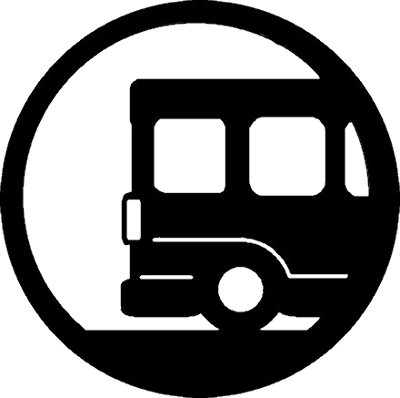

Informazioni sui consumi di un viaggio d'istruzione
Introduzione
La relazione tra le nostre abitudini e il cambiamento climatico è diventata significativa negli ultimi anni ed è importante capire come le nostre abitudini influenzino l'ambiente. Oggi, provando ad utilizzare il nostro calcolatore, potrai renderti conto dell’impatto ambientale che può avere una semplice gita di istruzione, calcolando la tua impronta ecologica in termini di emissioni di anidride carbonica tenendo conto di ogni scelta effettuata durante il viaggio, il soggiorno e i pasti. Il calcolo viene fatto attraverso la CO2 equivalente (abbreviata in CO2e) la misura che permette di confrontare e sommare i contributi dei diversi gas serra, come il metano e l’ossido di azoto, che vengono paragonati all’equivalente in CO2, il più presente. Il risultato al quale ambiamo è quello di sensibilizzare, partendo da coloro che utilizzeranno il calcolatore, riguardo, non soltanto, al tema della nostra influenza sull’ambiente, bensì capire che è possibile compensare le nostre emissioni con azioni di salvaguardia.
|
Vai al Calcolatore |
Alloggi |
 Trasporti |
Cibi |
Extra |
|
Compensazione |
Alloggi
Quando si pensa alle cause del riscaldamento globale, sicuramente, tra le prime cose ci possono venire in mente,non vi è il settore alberghiero. Eppure, a discapito di quanto si possa pensare, tale settore è causa dell’1% delle emissioni globali di CO2 secondo la Sustainable Hospitality Alliance, che riunisce aziende alberghiere eticamente impegnate. E tale dato, nel tempo, è destinato ad aumentare. Se si va in un hotel, chiaramente non ci si può occupare delle emissioni di tutta la struttura, eppure nel nostro piccolo possiamo intervenire, ad esempio con le azioni che compiamo normalmente a casa, come tenere spente le luci quando non necessarie, evitare di fare docce troppo lunghe, ecc. . A monte però c’è la scelta dell’alloggio. "Staying in eco-friendly accommodations” riduce l'impatto del turismo sull'ambiente. Gli alloggi ecologici si concentrano sulla conservazione dell'ambiente, scegliendo la produzione di energia rinnovabile, la bioarchitettura, l’uso di prodotti per la pulizia ecologici, l'attenzione al riciclo che superi l’80%. Spesso questi alberghi sono collocati in zone facilmente raggiungibili con i mezzi pubblici; scegliere di soggiornare in queste strutture sostiene l'economia locale perché la maggior parte offre alimenti biologici a chilometro zero. Ci è stata consigliata la piattaforma Ecobnb.com che consente di trovare e prenotare alloggi turistici che soddisfano i criteri di sostenibilità. Pensiamo quindi di suggerire all’agenzia che prenota i nostri viaggi scolastici di porre attenzione ai criteri di sostenibilità dell’alloggio, e di informarci in modo che possiamo fare una scelta consapevole. Certo, questa piattaforma può essere utile anche per le nostre vacanze estive. E’ utile anche informarsi per diminuire l'impatto dei viaggi.
Trasporti
É noto a chiunque che il trasporto è responsabile di una grande quantità di emissioni di gas serra e provoca inquinamento dell'aria che respiriamo . Secondo l'Organizzazione Mondiale della Sanità, il 24% delle morti causate dall'inquinamento dell'aria sono dovute alle emissioni di trasporti . “Taking public transportation”: riduce l'inquinamento atmosferico, migliora la congestione stradale e riduce la quantità di anidride carbonica rilasciata nell'atmosfera. Allo stesso modo, meno veicoli riducono gli ingorghi sulle strade e si guadagna tempo e salute! Nella stessa città di Bergamo, per esempio, sono state pensate varie soluzioni per favorire la sostenibilità dei trasporti: oltre al potenziamento dei mezzi pubblici con la linea C e la TEB , è stato creato un sistema di car-sharing elettrico , che permette a chiunque di prenotare una macchina completamente elettrica ad uso personale in tutta la provincia; le BiGi e i monopattini elettrici , che i cittadini possono noleggiare a prezzi davvero bassi e che permettono agli abitanti di spostarsi liberamente lungo le ciclabili e strade apposite. Anche se non ce ne accorgiamo, nella nostra mobilità quotidiana si nascondono delle cattive abitudini; consigliamo, a chi può, di venire a scuola in bici o con i mezzi pubblici, che oltre ad essere più eco friendly sono positivi per la salute del pianeta e la nostra socialità! E per la gita scolastica.. unica opzione consigliata: uso di mezzi pubblici!
Cibi
La produzione e il consumo di cibo contribuiscono al surriscaldamento globale in diversi modi: l’allevamento è la causa prima, circa il 15% delle emissioni annue di gas serra sono dovute al bestiame, che libera metano principalmente dal processo di digestione e un’ulteriore quota si origina dalla decomposizione del letame; l’agricoltura è responsabile circa del 14% a causa della deforestazione, uso di quantità spropositate di fertilizzanti che rilasciano ossido di azoto, e ultimi, ma non per importanza, la produzione stessa delle colture, il loro trasporto e lavorazione che sfruttano energia da combustibili fossili. Pertanto, ricordiamo che dietro ad un cibo comodamente acquistato c’è un quantitativo di emissioni di CO2 che non sempre viene compensato: da sempre sull'etichetta dei prodotti è possibile leggere il metodo di fabbricazione e trasporto del prodotto in questione, ma da pochi anni in alcuni Paesi europei è aumentato l’impiego delle etichette climatiche, che mostrano il “costo” degli alimenti in termini sia di emissioni di gas serra che di consumo di risorse naturali (soprattutto acqua e suolo), aiutando gli acquirenti a fare scelte più consapevoli. Un semplice consiglio è quello di preferire preparazioni a base vegetale invece di carne e latticini, mangiare frutta e verdura coltivata localmente e di stagione, evitare cibi confezionati e soprattutto, ridurre lo spreco di cibo che attualmente è troppo elevato. Ci si può anche informare per contribuire in pratiche agricole sostenibili come le cooperative locali organizzate nelle province (come ABioMed, Demetra OA), e, per sopperire ad almeno una parte delle nostre emissioni, attuare piccole opere di compensazione, per le quali suggeriamo di consultare la sezione apposita del calcolatore che vi stiamo proponendo!
Extra
Quando siamo in viaggio, poniamo attenzione ai rifiuti che produciamo? Se la risposta è "no", allora dovremmo cominciare a farlo. Puoi cambiare le tue abitudini e ridurre la tua impronta di carbonio!! Il programma ambientale delle Nazioni Unite stima che circa il 14% di tutti i rifiuti solidi globali è prodotto ogni anno esclusivamente dall’industria turistica e che ogni singolo turista ne produce 1 o 2 kg ogni giorno che, molto spesso, finiscono nell’indifferenziato. Il motivo è intuibile: durante i periodi di vacanza o delle gite scolastiche si ha un aumento dell'uso di contenitori monouso e di imballaggi alimentari che, purtroppo, finiscono per diventare rifiuti. A volte capita anche di lasciarci tentare dal pensiero "per questa volta posso fare un'eccezione” e di finire per consumare molto di più rispetto al solito, SENZA badare alle conseguenze . In più, quando siamo fuori dai nostri luoghi abituali, per pigrizia non cerchiamo neanche di capire come funziona la gestione della raccolta differenziata e quindi semplicemente lasciamo i rifiuti nell’indifferenziato . Bastano piccoli accorgimenti per ridurre i rifiuti durante i viaggi, come evitare l'utilizzo di confezioni monouso e di prodotti confezionati e portare con sé borracce per l’acqua e contenitori per il cibo. Se non sai dove mettere il rifiuto, portalo a casa. Semplice, no? Come se non bastasse, spesso nei viaggi siamo tentati da acquisti veloci senza porre molta attenzione: souvenir, regali, prodotti locali e articoli. Un esempio riguarda l’acquisto di vestiti, dei quali spesso NON guardiamo l’etichetta della composizione. Ricorda che le fibre sintetiche hanno un grandissimo impatto sull’ambiente perché, in lavatrice, dai vestiti si possono distaccare microparticelle e nano-particelle che, attraverso le acque di scarico, raggiungono gli oceani. E’ stato calcolato che una quantità di mezzo milione di tonnellate di microfibre (pari a 50 miliardi di bottiglie di plastica!) è già entrata nella catena alimentare, causando ingenti danni all’ecosistema marino e non meno all’uomo, che da esso dipende per l’alimentazione. Se ancora non ti abbiamo convinto, senti qua: una persona impiega circa 10 anni a bere 10.000 litri di acqua, ovvero la quantità di acqua necessaria a produrre un chilo di cotone per un paio di jeans. L’Onu stima che il 20% dell’acqua consumata a livello globale sia riconducibile al settore tessile, a cui spetta il secondo posto dopo l’agricoltura. Proprio ora che siamo di fronte ad una crisi climatica, pensiamoci! Ecco quindi un consiglio per il nostro prossimo viaggio d'istruzione: fai attenzione ai rifiuti e agli acquisti!
Compensazione
Sapere quanto si emette è importante ma non sufficiente se non si fa nulla per ridurre il nostro impatto sull’ambiente. Oltre ad attuare scelte per diminuire l’impronta negativa sull'ambiente, è necessario pensare ad azioni per la compensazione dei danni inevitabilmente prodotti. Per compensazione si intende il processo di rimozione della CO2 prodotta dall'atmosfera, considerata come CO2 equivalente. L’assorbimento di CO2 è effettuato in natura principalmente dalla vegetazione: il botanico Stefano Mancuso scrive che un modo per affrontare la crisi climatica sarebbe quello di piantare mille miliardi di alberi.
Come metodo di compensazione, quindi, ti proponiamo di calcolare quanti alberi servirebbero per riassorbire la CO2 equivalente emessa dalla gita: inseriti i dati nel sito, verrà indicato quanti alberi di una certa specie servirebbero per riassorbire la CO2 emessa nell'arco di dieci anni.
Un'opzione di compensazione potrebbe essere quindi sostenere azioni di riforestazione, aggiungendo al costo della gita una quota da investire per "adottare" alberi di qualsiasi tipo, finanziando la loro piantagione e la loro cura. Su Treedom si possono selezionare alberi in base al loro indice di assorbimento di CO2 e all'impatto sociale che tale albero porta alla zona in cui è piantato.
Un'altra alternativa potrebbe essere aderire ad azioni di salvaguardia in collaborazione con associazioni ambientaliste come il C.A.I., che protegge l’ecosistema alpino e prealpino, o la pulizia dai rifiuti con Legambiente.
Infine pensiamo anche che sia bello impegnarsi in campagne di sensibilizzazione: scriviamo alla nostra Preside, ai sindaci del nostro Comune di piantare alberi e curare maggiormente il verde.